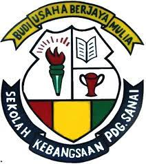
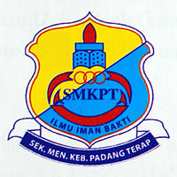

"An investment in knowledge pays the best interest."- Benjamin Franklin

SEKOLAH KEBANGSAAN PADANG SANAI
(2008-2014)
I started my preschool when i was 6 years old at Sekolah Kebangsaan Padang Sanai in 2008.
Then i also continued my primary school studies in the same school from grade 1 to grade 6 in
2009 to 2014. In 2014, I have achieved a flying colours results in the UPSR exam by achieving
3A2B at that time. Sekolah Kebangsaan Padang Sanai is located not far from my house, only
about 5km away.

SEKOLAH MENENGAH KEBANGSAAN PADANG TERAP
(2015-2019)
In 2015, I continued my secondary education at Sekolah Menengah Kebangsaan Padang Terap until 2019.
In 2017, I got unsatisfactory results in the PT3 exam.I was very disappointed because I could not make my
parents proud at that time. However, I did not give up and was determined to rise from failure. I worked hard
in my studies for two years and finally my efforts paid off. I got excellent results in the SPM exam in 2019 by
getting 6A.

UNIVERSITI TEKNOLOGI MARA CAWANGAN KEDAH
(2020-2023)
I have continued my diploma studies at the end of 2020 at Universiti Teknologi Mara Kedah in the diploma in
information management. Unfortunately, due to Covid-19 epidemic that has hit the world, I took online classes
for 3 semesters. I entered college in my fourth semester and in my opinion, I prefer to attend face-to-face
classes. This is because, I am happy to meet many friends and be able to interact directly with the lecturers
regarding the subjects.
CLICK THIS BUTTON TO GO UP